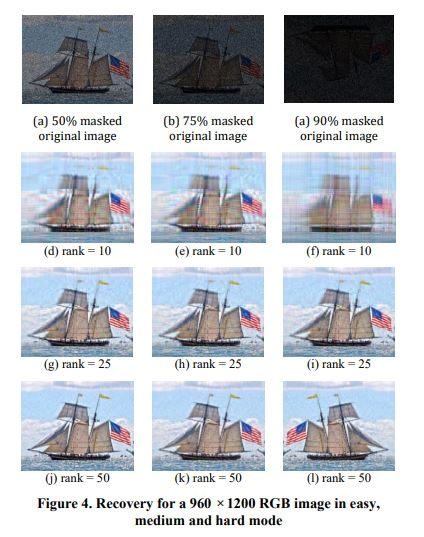

Applications of SVD
Applications of SVD¶
Implementation of SVD
import numpy as np
A = np.array([[7, 2], [3, 4], [5, 3]])
U, D, V = np.linalg.svd(A) # v here=v(Trans) in svd transpose actually
U,D,V
(array([[-0.69366543, 0.59343205, -0.40824829],
[-0.4427092 , -0.79833696, -0.40824829],
[-0.56818732, -0.10245245, 0.81649658]]),
array([10.25142677, 2.62835484]),
array([[-0.88033817, -0.47434662],
[ 0.47434662, -0.88033817]]))
Applications of Singular Value Decomposition (SVD)
Image Compression
import numpy as np
import matplotlib.pyplot as plt
#This line is required to display visualizations in the browser
%matplotlib inline
from skimage import data
from skimage.color import rgb2gray
from ipywidgets import interact,interactive,interact_manual
from skimage import img_as_ubyte,img_as_float
gray_images = {
"cat":rgb2gray(img_as_float(data.chelsea())),
"astro":rgb2gray(img_as_float(data.astronaut())),
"camera":data.camera(),
"coin": data.coins(),
"clock":data.clock(),
"blobs":data.binary_blobs(),
"coffee":rgb2gray(img_as_float(data.coffee()))
}
from numpy.linalg import svd
def compress_svd(image,k):
"""
Perform svd decomposition and truncated (using k singular values/vectors) reconstruction
returns
--------
reconstructed matrix reconst_matrix, array of singular values s
"""
U,s,V = svd(image,full_matrices=False)
reconst_matrix = np.dot(U[:,:k],np.dot(np.diag(s[:k]),V[:k,:]))
return reconst_matrix,s
def compress_show_gray_images(img_name,k):
"""
compresses gray scale images and display the reconstructed image.
Also displays a plot of singular values
"""
image=gray_images[img_name]
original_shape = image.shape
reconst_img,s = compress_svd(image,k)
fig,axes = plt.subplots(1,2,figsize=(8,5))
axes[0].plot(s)
compression_ratio =100.0* (k*(original_shape[0] + original_shape[1])+k)/(original_shape[0]*original_shape[1])
axes[1].set_title("compression ratio={:.2f}".format(compression_ratio)+"%")
axes[1].imshow(reconst_img,cmap='gray')
axes[1].axis('off')
fig.tight_layout()
import numpy as np
def compute_k_max(img_name):
"""
utility function for calculating max value of the slider range
"""
img = gray_images[img_name]
m,n = img.shape
return m*n/(m+n+1)
#set up the widgets
import ipywidgets as widgets
list_widget = widgets.Dropdown(options=list(gray_images.keys()))
int_slider_widget = widgets.IntSlider(min=1,max=compute_k_max('cat'))
def update_k_max(*args):
img_name=list_widget.value
int_slider_widget.max = compute_k_max(img_name)
list_widget.observe(update_k_max,'value')
interact(compress_show_gray_images,img_name=list_widget,k=int_slider_widget);
Reference :https://colab.research.google.com/drive/1HLJcLzWG46NlPMCgD_KdVLCl-k68mVp2#scrollTo=d35EdHEQpv-b
Image Recovery
The process of filling in the missing items in a partly seen matrix is known as matrix completion. A well-known example of this is the Netflix dilemma.If customer I has viewed movie j and is otherwise unavailable, we’d want to anticipate the remaining entries in order to offer appropriate suggestions to consumers on what to watch next, given a ratings matrix in which each entry (i,j) indicates the rating of movie j by customer i.
The fact that most users have a pattern in the movies they view and the ratings they give to these movies is a key factor in resolving this issue. As a result, the ratings matrix contains very little unique data. This implies that a low-rank matrix would be able to approximate the matrix well enough.

Eigen faces
The encoding is accomplished by expressing each face in the new face space as a linear combination of the specified eigenfaces.

Spectral Clustering
from sklearn.datasets import make_circles
from sklearn.neighbors import kneighbors_graph
from sklearn.cluster import SpectralClustering
import numpy as np
import matplotlib.pyplot as plt
# generate your data
X, labels = make_circles(n_samples=500, noise=0.1, factor=.2)
# plot your data
plt.scatter(X[:, 0], X[:, 1])
plt.show()
# train and predict
s_cluster = SpectralClustering(n_clusters = 2, eigen_solver='arpack',
affinity="nearest_neighbors").fit_predict(X)
# plot clustered data
plt.scatter(X[:, 0], X[:, 1], c = s_cluster)
plt.show()
# source :Gitgub - rawspectral_clustering.py
D:\anaconda\lib\site-packages\sklearn\manifold\_spectral_embedding.py:245: UserWarning: Graph is not fully connected, spectral embedding may not work as expected.
warnings.warn("Graph is not fully connected, spectral embedding"